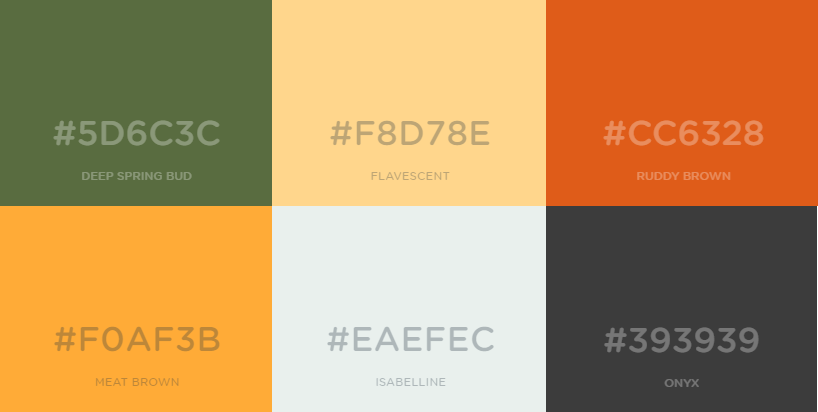

P2 project design
By: Bendik, Runar, Christopher, Sander, Ingvild
20.09 2018, Thursday
Administrative details
Vår imaginære kunde er Dr. Oetker. Med tillatelse fra Dr. Oetker Norge kan vi bruke navn og bilder av produktet deres Diavola Calabrese.
Purpose, goals and audience
Vi har valgt å bruke pizzaen “Diavola Calabrese” som tema for vår nettside. Kunden ønsker å fremme kjærlighet og interesse for deres pizza. Målet nås ved å informere, vise til positive kundeomtaler, komme med tilberednings- og serveringstips og mulighet for kontakt. Påmelding til nyhetsbrev vil også være mulig. Målgruppen er de som liker Diavola Calabrese, de som ønsker informasjon om den og de som generelt er glade i pizza.
Navigation structure
Med mål om å spre informasjon om Diavola Calabrese på en lett og oversiktlig måte, vil alle sider på nettsiden være tilgjengelig fra hvilken som helst side man er på. Alle linkene til alle sidene vil være i navigasjonsbaren øverst på siden. I navigasjonsbaren vil ha link til fem sider; hjem, om pizzaen, omtaler, tilberedning, kontakt. Det vil også være mulig å komme tilbake til hovedsiden ved å trykke på navnet “Diavola calabrese” som kommer til å være øverst til venstre. Dette er for å gjøre det enklest mulig for besøkende å komme tilbake til startsiden.
Page layout and appearance
Generelt fargeskjema
Tekst, farge og layout
For å gjøre siden mest mulig oversiktlig og enkel å navigere vil vi ha et fast oppsett på alle sidene, der vi legger vekt på brukervennlighet. All tekst har hvit farge, bortsett fra i sitat og i kundeomtaler.
- Logo: "Segoe Script", størrelse 28
- Navigasjonstekst: “Bahnschrift Semicondensed”, størrelse 20, store bokstaver
- h1: "Bahnschrift", størrelse 22, store bokstaver
- Tekst (innhold): “Bahnschrift”, størrelse 12
- Footertekst: “Bahnschrift”, størrelse 12
- Sitat: “Cooper Black”, forskjellige størrelser
Det er viktig for oss å tydelig signalisere hva slags type side dette er, dette ved bruk av andre hjelpemidler enn bare bilder. Både farger, fonter og layout skal gi assosiasjoner til pizza eller Italia. Vi har derfor valgt stilrene fonter, og varme farger som finnes i pizza (se fargeskjema).
- Nettsiden vil ha bakgrunnsfargen “isabelline” (#EAEFEC).
- Content-boksene vil ha bakgrunnsfargene “deep spring bud” (#5D6C3C), “ruddy brown” (#CC6328), eller “meat brown” (#F0AF3B).
- Omtaler-boksene og sitat-boksene vil ha bakgrunnsfarge #E5E5E5 (ikke i fargeskjema).
- Anførselstegn i sitat-blokken vil ha farge “flavescent” (#F8D78E).
- Stiplede linjer har hvit farge og bredde 6px.
- Submit-knapper til forms vil ha bakgrunnsfarge “deep spring bud” (#5D6C3C).
- Footeren vil ha bakgrunnsfargen “onyx” (#393939).
Navigasjonsbaren øverst på siden vil ha et repeterende bakgrunnsbilde, et mønster, som vist i standardoppsettet for nettsiden.
Standardoppsettet for hver side vil se slik ut:
Content
Det er her vi skal vise hvordan siden vil komme til å se ut:Hjem
Dette er startsiden på nettsiden og vil være det første brukeren vil se. Det er derfor viktig å fange oppmerksomheten til de som besøker siden, dette tenker vi å gjøre med et innbydende bilde av pizzaen Diavola Calabrese, et inspirerende sitat og kort informasjon om pizzaen.

Om
Her kommer mer dyptgående informasjon om pizzaen og dens historie. På denne siden vil det være to tekstbokser; en med informasjon om pizzaen og en med informasjon om selskapet bak, Dr Oetker.

Omtaler
Hva syns de som har spist Diavola Calabrese? Den beste måten å finne ut om denne pizzaen er noe du burde prøve er å lese om hva andre mener om den. Her vil det være omtaler og anmeldelser fra de som har spist denne pizzaen. Ratingen er satt opp med små pizzaer i stedet for stjerner som vanligvis brukes, for å ha et gjennomførende tema.

Tilberedning
På denne siden vil det være tips om servering og tilberedning av pizzaen. En enkel guide med bilder og tekst vil forklare hvordan man skal steke pizzaen på rett måte. Det er viktig for oss å ha med dette for å sikre at alle skal få en best mulig opplevelse med Diavola Calabrese. Bildene gjør innholdet tilgjengelig også for de som ikke kan lese eller har et annet morsmål enn norsk.

Kontakt
Kontaktsiden skal inneholde et segment der man kan sende inn e-post til selskapet med spørsmål, henvendelser o.l. Et annet segment på kontaktsiden skal være mulighet for å melde seg på en e-postliste med nyhetsbrev. Gjennom nyhetsbrevene vil man få tilbud, tips, nyheter osv. fra Dr. Oetker. Grunnen til at kontaktlisten er viktig for vår kunde er for å holde en god kommunikasjonsflyt mellom kundene og selskapet. Det er viktig for Dr. Oetker å vise kundene på en tydelig måte at de er åpne for innspill og tilbakemeldinger.

Minimum requirements
- Knapp for dropdown-meny for mobil
- En javascript-funksjon som fungerer på mobilversjonen av nettsiden. Når knappen trykkes vil menyen komme opp.
- Modularitet
- En javascript-funksjon som hindrer gjenbruk av kode. Denne vil implementere navigasjonsbaren og footeren til alle sidene.
- Loading screen - pizza som snurrer
- En javascript-funksjon som gir brukeren indikasjon på at nettsiden lastes inn.
-
Bekreft innsending av kontaktskjema og nyhetsbrev-skjema
- En javascript-funksjon som gjør at det kommer opp en bekreftelse på at innsending av skjema er mottatt.
- Endre skriftstørrelse
- En javascriptfunksjon som gjør at skriftstørrelsene på nettsiden endres. Det vil være to muligheter, enten den vanlige fontstørrelsen eller en større.
Plan
| Filnavn | Beskrivelse | Ansvar | Deadline |
|---|---|---|---|
| about.html | Informasjon om pizzaen | Ingvild | 28.10 |
| contact.html | Inneholder all kontaktinformasjonen | Runar | 28.10 |
| index.html | Hovedsiden på nettstedet | Christopher | 28.10 |
| reviews.html | Omtaler | Runar | 28.10 |
| cooking.html | Tips om tilberedning og servering | Sander | 28.10 |
| main_style.css | Inneholder hovedstilen | Bendik | 04.11 |
| includehtml.js | Skript for modularitet | Bendik | 28.10 |
| navbar.html | HTML-snippet for navbar. Inkluderes vha. JS | Bendik | 21.10 |
| footer.html | HTML-snippet for footer. Inkluderes vha. JS | Sander | 21.10 |
| dropdownmobile.js | JavaScript for dropdown-funksjon | Bendik | 28.10 |
| loadingscreen.js | JavaScript for loading screen | Runar | 28.10 |
| confirmform.js | JavaScript for å bekrefte innsending av form | Alle | 28.10 |
| changefontsize.js | JavaScript for å endre skriftstørrelse | Bendik | 28.10 |
| Bilder | Sørge for at alle bilder blir tatt | Sander | 04.11 |
| Siste sjekk | Sjekking og gjennomgang av innhold | Alle | 11.11 |
Liste over alle filer og mappestruktur (bortsett fra bilder):
Liste over bilder (alle har ansvar for å ta bildene):
- Bilde til hvert serveringstips
- Pizza i stekepanne
- Diavola calabrese Hawaii
- Diavola Calabrese California
- ++
- Pizza i ovn
- Serveringsklar pizza
- Pizza med ruccola
- Bilder til step by step løsning
- Diverse bilder som skal være rundt omkring på nettsiden